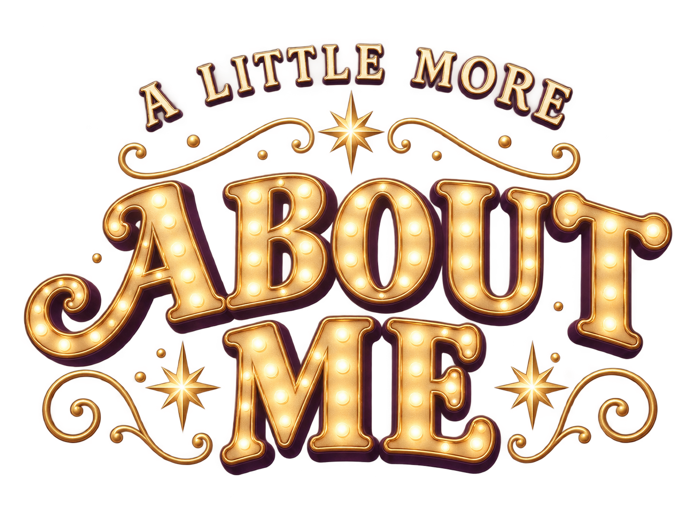
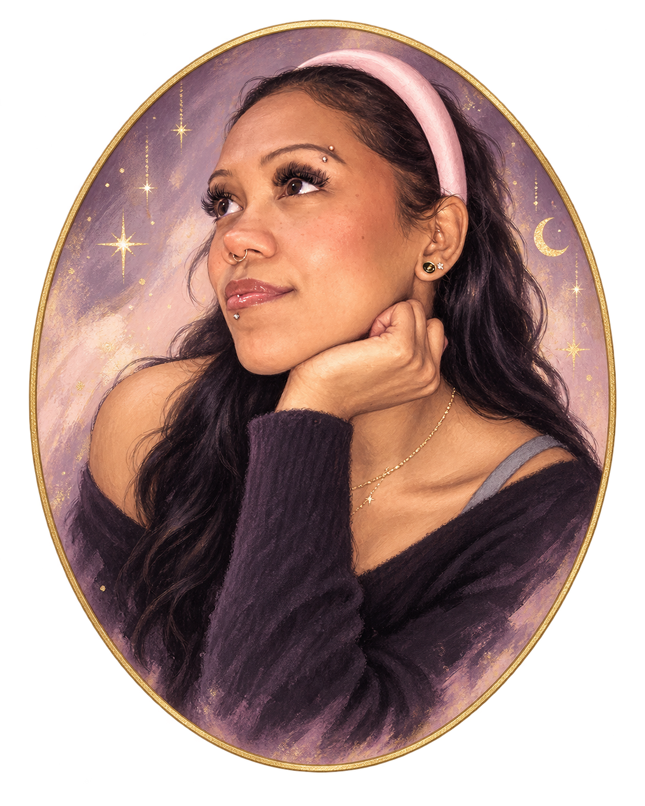
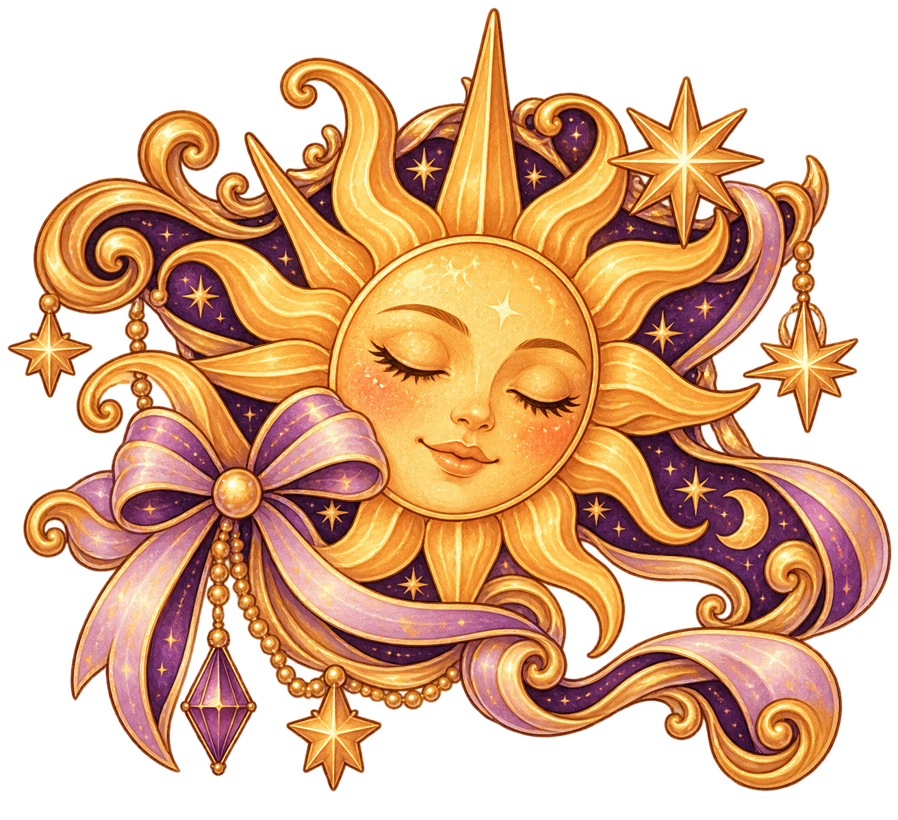
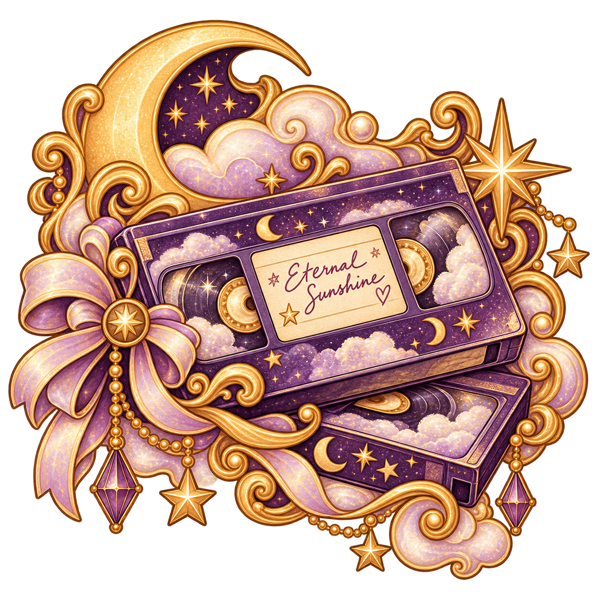
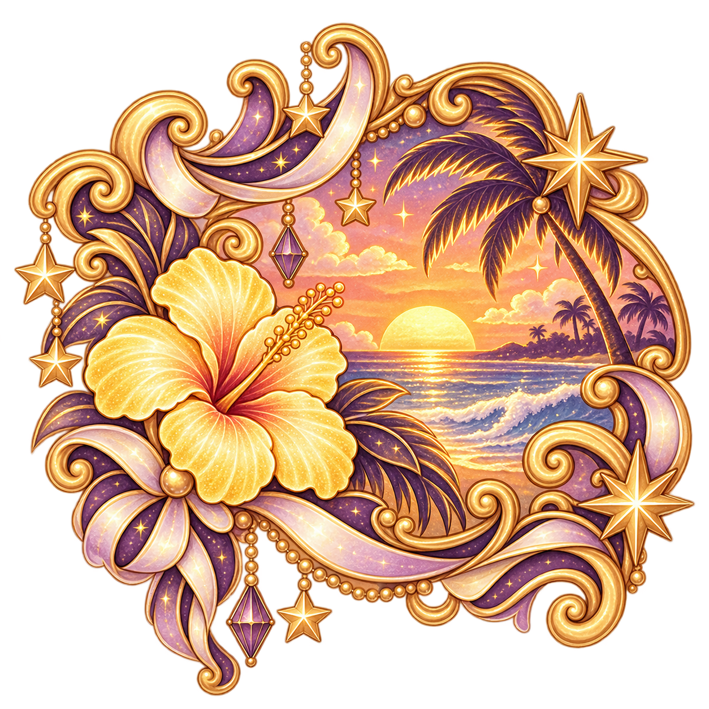
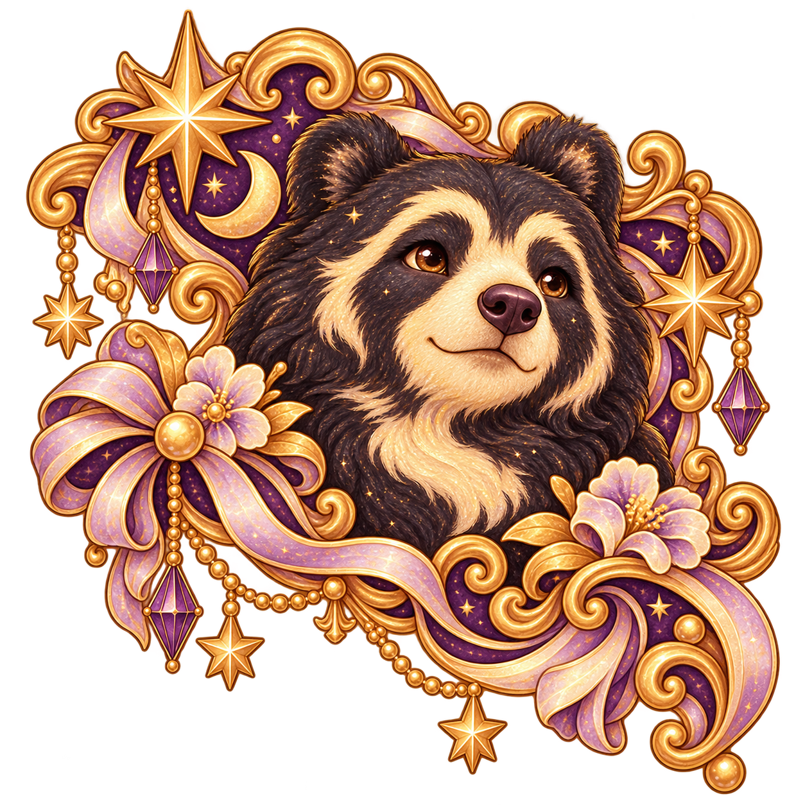
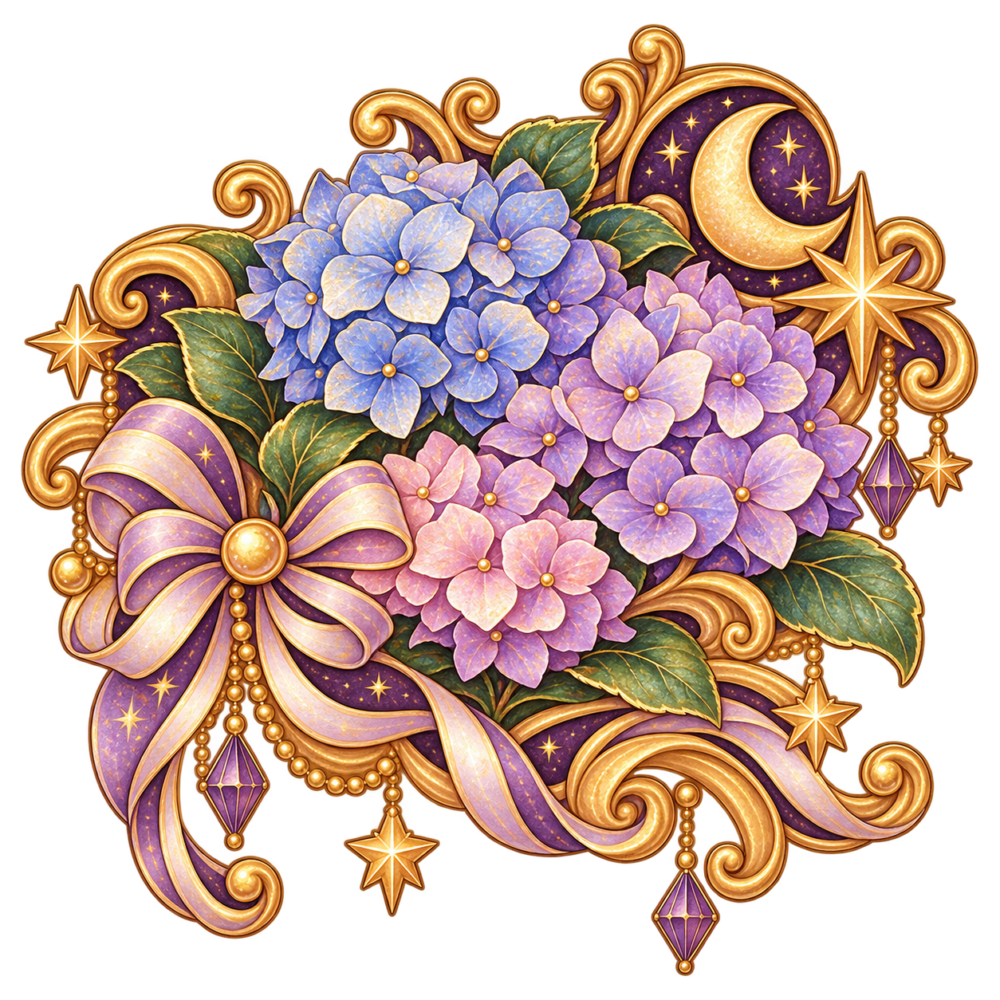
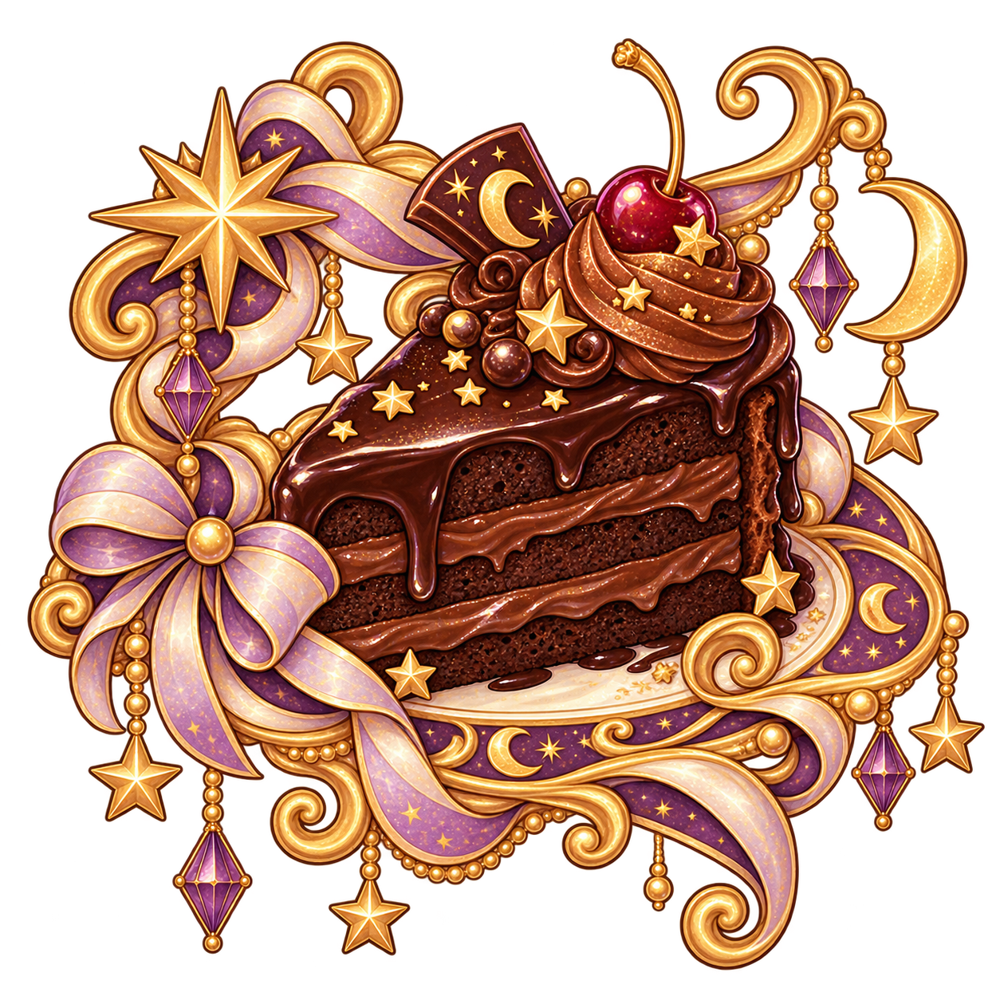

I am a first-year computer science student. I am really enjoying learning how to code, and in that, finding new ways to be creative.
My ultimate goal someday is to create my own games! I would love to make a Y2K flash style dress up game website as a throwback to my childhood, or a visual novel, or even something completely new to me!
When I'm not glued to the computer screen or my sketchbook, you can usually find me outside in nature. I have both flower gardens and vegetable gardens that my husband and I work on together. I also love camping, hiking, and yoga!
I believe our purpose in life is to be kind to other people, and to share our creativity with the world.





